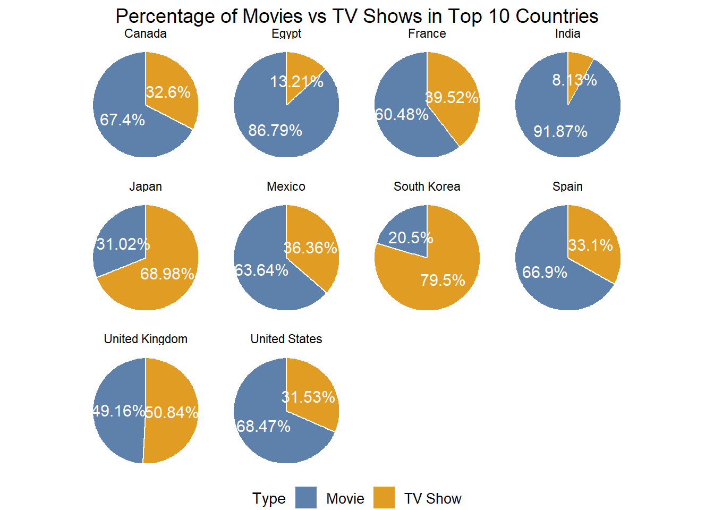

Warning: package 'dplyr' was built under R version 4.3.3Warning: package 'ggplot2' was built under R version 4.3.3Holly Milazzo
In this exercise, I recreated a series of pie charts which were originally presented in an exploratory data analysis (EDA) on Netflix movies and TV shows and used Python to develop. The original visualizations, found here Link, focused on analyzing content distribution from various countries, emphasizing a predominant presence of TV shows in Japan and South Korea.
Instead of focusing solely on these regions, I chose to highlight the top 10 countries in the Netflix dataset. By leveraging R’s ggplot2 library, I replicated these charts to explore similar insights, highlighting the proportional distribution of movies versus TV shows across different countries within the dataset. I also use ChatGPT for assistance on converting Python code to R.
Warning: package 'dplyr' was built under R version 4.3.3Warning: package 'ggplot2' was built under R version 4.3.3This code snippet analyzes the cleaned_data to count occurrences based on country and type. It then groups this data by country, calculates the percentage of each type within each country group, and stores this information in percentage_data. Finally, it ungroups the data to return it to a standard format, allowing for further exploration and analysis of the percentage distribution of type across different countries.
# Count occurrences of each country and type
count_data <- count(cleaned_data, country, type)
# Group by country
grouped_data <- group_by(count_data, country)
# Calculate percentage within each group
grouped_data <- mutate(grouped_data, percentage = n / sum(n) * 100)
# Ungroup the data
percentage_data <- ungroup(grouped_data)
# Show percentage_data
percentage_data# A tibble: 847 × 4
country type n percentage
<chr> <fct> <int> <dbl>
1 , France, Algeria Movie 1 100
2 , South Korea TV Show 1 100
3 Argentina Movie 38 67.9
4 Argentina TV Show 18 32.1
5 Argentina, Brazil, France, Poland, Germany, Denmark Movie 1 100
6 Argentina, Chile Movie 2 100
7 Argentina, Chile, Peru Movie 1 100
8 Argentina, France Movie 1 100
9 Argentina, France, United States, Germany, Qatar Movie 1 100
10 Argentina, Italy Movie 1 100
# ℹ 837 more rows# Calculate total count of each country
country_totals <- aggregate(percentage_data$n, by = list(percentage_data$country), FUN = sum)
# Select top 10 countries by total count
top_10_countries <- country_totals[order(country_totals$x, decreasing = TRUE), ]$Group.1[1:10]
# Subset data for top 10 countries only
top_10_data <- subset(percentage_data, country %in% top_10_countries)
# Create pie chart for top 10 countries with improved readability
library(ggplot2)
# Plotting the pie chart
pie_plot <- ggplot(top_10_data, aes(x = "", y = n, fill = type)) +
geom_bar(stat = "identity", width = 1, color = "white") +
coord_polar(theta = "y") +
facet_wrap(~ country, scales = "free_y") +
geom_text(aes(label = paste0(round(percentage, 2), "%")),
position = position_stack(vjust = 0.5), color = "white", size = 4, family = "sans") + # Adjust text size, color, and font family
theme_void() +
scale_fill_manual(values = c("#5E81AC", "#E19C24"), labels = c("Movie", "TV Show")) + # Adjust colors and labels
theme(legend.position = "bottom", legend.text = element_text(size = 10, family = "sans"), plot.title = element_text(hjust = 0.5, size = 14, family = "sans")) + # Adjust legend and title text
labs(fill = "Type", title = "Percentage of Movies vs TV Shows in Top 10 Countries") # Adjust title
# Show the plot
print(pie_plot)